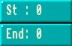
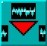

Amos Professional Manual Contents Index
the Sample Bank Maker
Start and end of sample

Trigger the small [Start] and [End] arrows to move the settings for the beginning
and end of the current sample. As soon as these settings are moved from the left
and right boundaries of the window, vertical lines appear to mark the new start
and end positions. You can also click directly on the start and end lines in the Current Sample
Window, and drag them to change their positions.
Frequency settings
 The frequency at which a sample is played is measured in Hertz, and by changing
this frequency some wonderful effects can be synthesised.
The frequency at which a sample is played is measured in Hertz, and by changing
this frequency some wonderful effects can be synthesised.
This panel contains sets of up and down arrow buttons, with
for the rapid raising of the frequency, the
 button for fine-tuning downwards, and so on. Try changing the frequency of the current sample now,
by decreasing the Hertz setting.
Settings are normally made using the left mouse button,
but use of the right mouse button will cause rapid level changes.
button for fine-tuning downwards, and so on. Try changing the frequency of the current sample now,
by decreasing the Hertz setting.
Settings are normally made using the left mouse button,
but use of the right mouse button will cause rapid level changes.
Re-name sample
Trigger this button if you want to change the name of the edited sample, before storing
it in the bank. Up to eight characters can be typed in after the prompt, and the new
name will appear at the top of the screen.
Erase current sample
 This button is used to erase the currently edited sample.
This button is used to erase the currently edited sample.
It does not effect the original
version of this sample stored in the sample bank.
Save current sample
 When you have finished editing the current sample, you can [Save] everything that is
held between the start and end lines in the Current Sample Window as an IFF file on the
current disc.
When you have finished editing the current sample, you can [Save] everything that is
held between the start and end lines in the Current Sample Window as an IFF file on the
current disc.
This type of file is commonly used to store data that can be read by
different sampler packages and computers. Any changes that have been made to the sample
frequency and name will be saved as well as the actual sample data.
Load raw sample
 When a "raw" sample is loaded, its name is computed from the filename, and its
frequency is automatically set to 8363 Hertz, which is the Noisetracker default setting. If a
sample is held in IFF, its own name and frequency are grabbed automatically.
When a "raw" sample is loaded, its name is computed from the filename, and its
frequency is automatically set to 8363 Hertz, which is the Noisetracker default setting. If a
sample is held in IFF, its own name and frequency are grabbed automatically.
Return sample to bank
 If you decide that you want to store any edited changes that have been made to the
current sample,
If you decide that you want to store any edited changes that have been made to the
current sample,
use the large [Right Arrow] button to deposit the sample back in the
sample bank.
The remaining buttons listed below are used to affect the sample bank
itself, as opposed to any current sample.
Insert empty sample

This button inserts an "empty" sample at the position which is currently highlighted
in the bank. This position can be anywhere you wish. It remains empty,
waiting to be filled by an edited copy of the current sample.